In-ear moldado · feito no Brasil desde 2010
Feito no formato
do seu ouvido.
O retorno que não escorrega, não vaza e deixa você tocar com o volume mais baixo. Cada Xtreme Ears nasce do molde do seu canal auditivo e é montado à mão, driver por driver.
- +100 artistas
- 1 ano de garantia
- 60 dias pra ajuste
Por que moldado
Universal encaixa em todo mundo.
Moldado encaixa em você.
Fone universal
- Ponteira de silicone que mexe quando você canta ou mastiga
- Vedação muda a cada vez que você coloca
- Som de fora vaza, e a tendência é subir o volume
- Grave muda conforme a ponteira assenta
Xtreme Ears moldado
- Concha feita a partir do molde do seu canal, até a segunda curva
- Encaixa igual todas as vezes, do ensaio ao bis
- Vedação de verdade: dá pra ouvir tudo com menos volume
- O som que você aprovou é o som que você ouve no palco
A linha PRO
Nove moldados.
Um pra cada palco.
Cada bolinha é um driver: subgrave grave médio agudo

XE ONE+/PRO
Separação instrumental e som limpo
Bateristas, baixistas e guitarristas
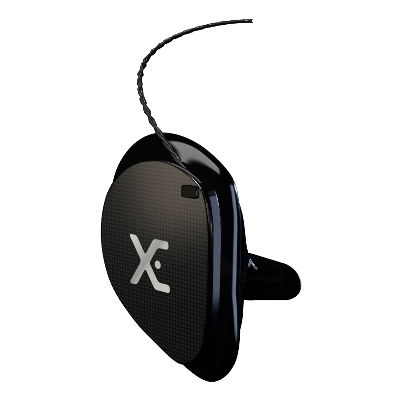
XE3/PRO
O rei do punch
Bateristas e baixistas
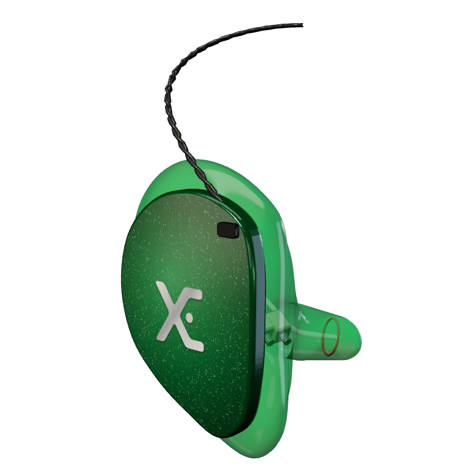
XE6/PRO
Peso com leitura fina
Bateristas, baixistas e percussionistas
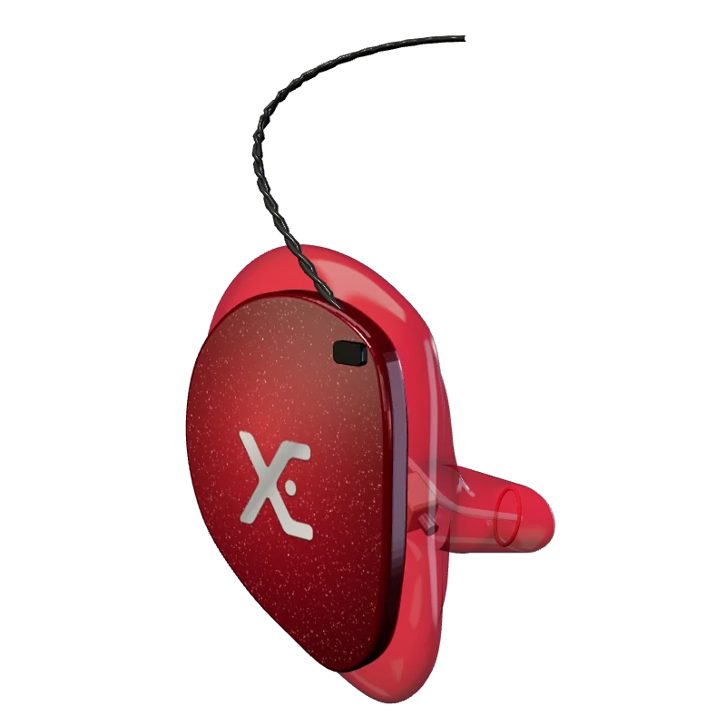
XE4/PRO
A definição de flat
Vocalistas, técnicos de som e guitarristas
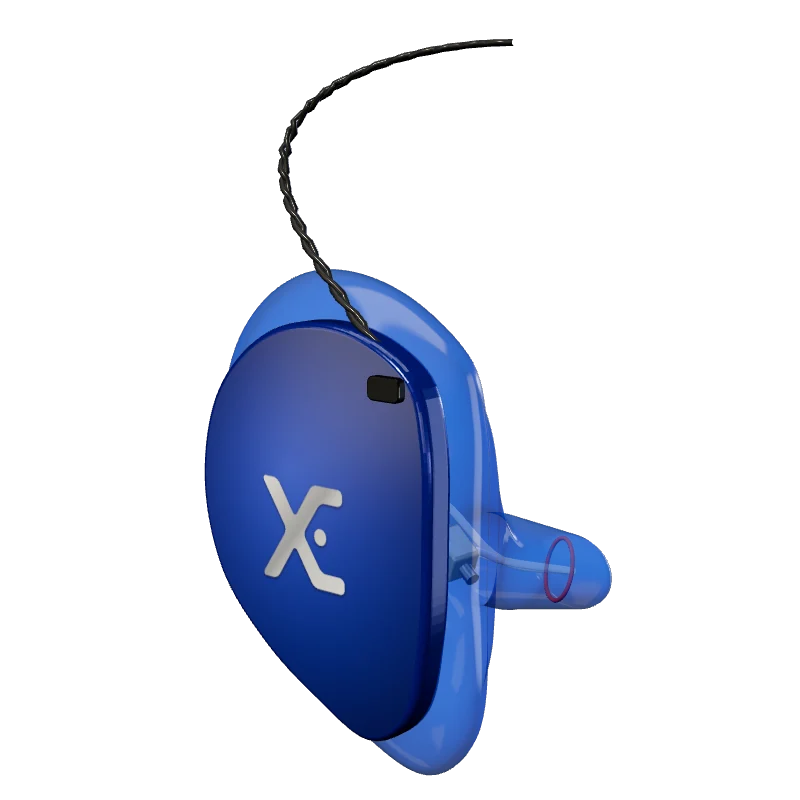
XE5/PRO
Transparente e cirúrgico
Vocalistas, técnicos de som e guitarristas
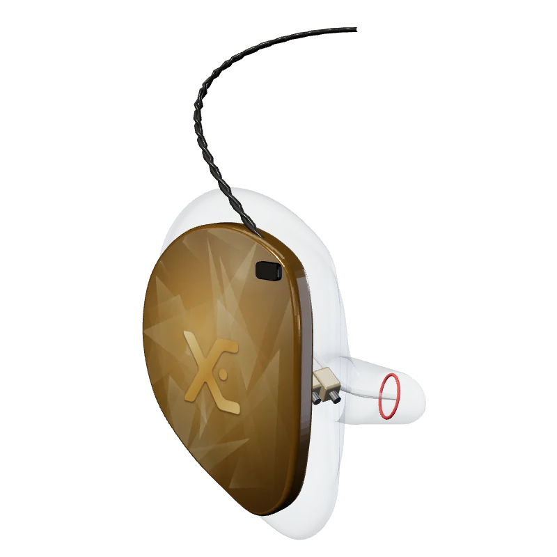
XE8/PRO
Grave articulado, médio na frente
Vocalistas, tecladistas e guitarristas

XE ONEMAX/PRO
Musical, aveludado e equilibrado
Técnicos de som, vocalistas e tecladistas
XE12/PRO
Resolução máxima e palco sonoro
Vocalistas, audiófilos, técnicos e produtores

XE14/PRO
O topo absoluto da linha
Audiófilos — o som mais puro
Ainda não é hora do moldado?
Os universais saem em até 2 dias úteis, sem pré-molde. Servem de primeiro in-ear e de reserva depois.

Xtreme Stage
O primeiro in-ear
Quem curte um verdadeiro som

Xtreme One Plus
Topo da linha universal
Músicos e audiófilos

Xtreme ONEMAX
Quatro drivers sem pré-molde
Cantores, tecladistas e audiófilos
30 segundos
Qual Xtreme Ears
é o seu?
Três perguntas. No fim você recebe uma indicação e uma alternativa, e já pode mandar tudo pro especialista no WhatsApp.
O molde
Tudo começa no molde do seu ouvido.
Um fonoaudiólogo faz o molde do seu ouvido em silicone. É esse molde que vira a concha do seu fone, então ele precisa ser perfeito: concha completa e canal até a segunda curva.
- Você compra ou conversa com o especialista e recebe a lista de fonoaudiólogos perto de você.
- Faz o molde e manda foto, vídeo ou faz videochamada com a Xtreme Ears na hora.
- Envia pelo correio com rastreio. Em cerca de 4 semanas o fone está pronto.
Quem usa
Mais de 100 artistas
tocam com Xtreme Ears.
De Gilberto Gil a Anitta, de Milton Nascimento a Aquiles Priester. A lista completa está na página oficial de artistas da marca.

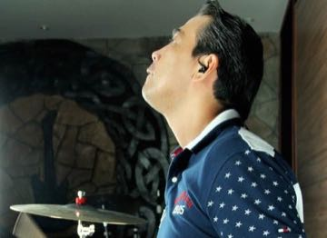
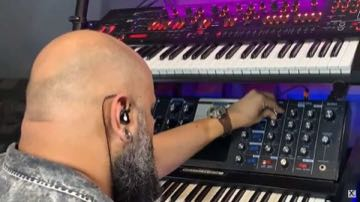
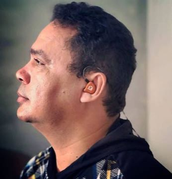
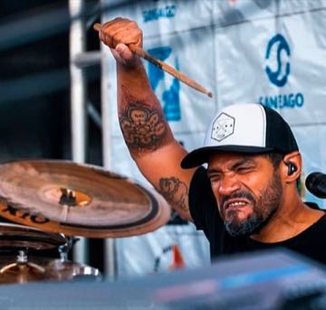
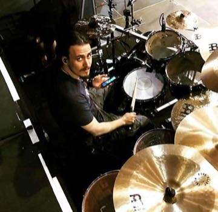
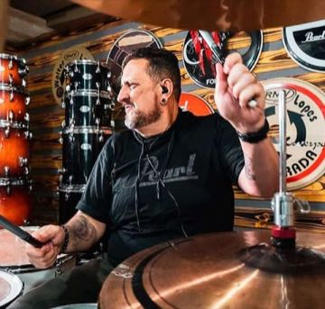
A Xtreme Ears
Engenharia acústica,
feita à mão em São Paulo.
A Xtreme Ears nasceu porque músico brasileiro queria um in-ear moldado com qualidade de fora e atendimento daqui. Foi fundada por André Goldstein, engenheiro especialista em acústica.
Em 2010 lançou o XE2/PRO, apontado como o primeiro fone in-ear personalizado projetado e produzido no Brasil. De lá pra cá a linha cresceu até o XE14/PRO, e cada fone continua sendo montado de forma artesanal, a partir do molde de quem vai usar.
O atendimento é consultivo do começo ao fim: alguém do time conversa com você antes da compra, acompanha a aprovação do molde e cuida da garantia depois.
- 2010Lançamento do XE2/PRO, primeiro in-ear moldado projetado e feito no Brasil
- 15+ anosDe palco, igreja, estúdio e turnê
- +100Artistas na família Xtreme Ears
- HojeNove moldados, de 3 a 14 drivers, e três universais
- 1 anode garantia contra defeito de fabricação e entupimento
- 60 diaspra ajustar o molde, inclusive refazendo a concha
- Desde 2010projetando e fabricando in-ear moldado no Brasil
- Frete grátispra todo o Brasil, com rastreio
Dúvidas
Antes de você perguntar.
Por que não dá pra comprar direto no carrinho?
Dá, mas o moldado só começa a ser feito depois do pré-molde do seu ouvido. Falar antes com o especialista evita escolher o modelo errado pro que você toca e já sai com a indicação de onde fazer o molde.
Quanto tempo leva?
Cerca de 4 semanas depois que o pré-molde aprovado chega na Xtreme Ears. Se tiver faceplate com arte, o prazo conta a partir da arte aprovada também. Universais e acessórios saem em até 2 dias úteis.
E se o fone não encaixar direito?
As conchas de acrílico têm 60 dias pra ajuste do molde, o que pode incluir refazer a concha. O fone tem 1 ano de garantia contra defeito de fabricação e entupimento.
Posso devolver um moldado?
Não, porque ele é feito pro seu ouvido e não serve em mais ninguém. Dá pra trocar por outro modelo pagando a diferença. Universais podem ser trocados em até 7 dias, sem uso e na embalagem original.
Mais drivers é sempre melhor?
Não. Mais drivers dão mais resolução e separação, mas o certo é o que combina com o seu instrumento. Baterista costuma render mais com punch no grave do que com 12 drivers. É isso que a conversa resolve.
Dá pra ouvir o ambiente e a plateia?
Existe a opção Ambient: ventilação com 4 plugues que deixam entrar o som de fora e 1 plugue fechado que devolve o isolamento total. O preço é um pouco de grave a menos com a ventilação aberta.
Posso colocar a minha logo?
Pode. A logo vai gravada no faceplate. Precisa de arquivo vetorial (CorelDraw ou Illustrator). Também tem madeira, aço escovado, fibra de carbono, cristais e glitter, em mais de 20 cores.
O frete é grátis?
A Xtreme Ears anuncia frete grátis e entrega em todo o Brasil. Na garantia, se o defeito for avisado em até 7 dias da entrega, ela paga ida e volta.
Fale com um especialista
Conta o que você toca.
A gente indica o fone.
Nada vai pra caixa de entrada esquecida: o formulário abre o WhatsApp com a sua mensagem pronta. Atendimento de segunda a sexta, das 9h às 17h.